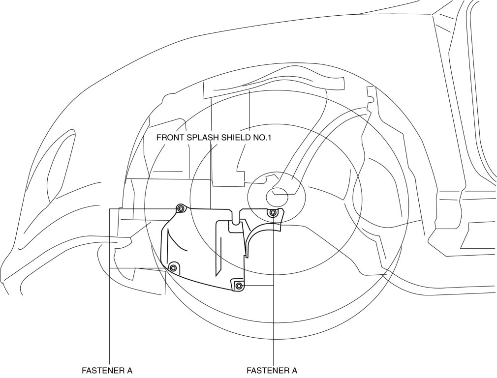
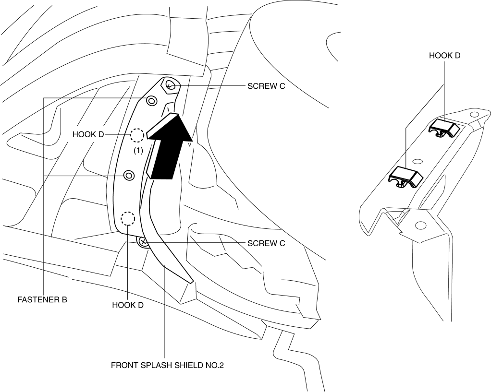
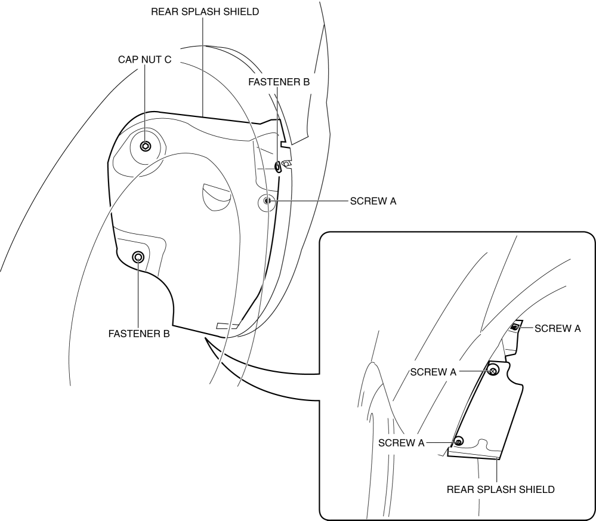

< Previous
Next >
2014 -
Mazda6 -
Body and Accessories
SPLASH SHIELD REMOVAL/INSTALLATION
Front
Front splash shield No.1
1. Set the mudguard aside. (See MUDGUARD REMOVAL/INSTALLATION.)
2. Remove fasteners A.

3. Remove the front splash shield No.1.
4. Install in the reverse order of removal.
Front splash shield No.2
1. Remove fasteners B.

2. Remove screws C.
3. Remove the front splash shield No.2 in the direction of the arrow (1) shown in the figure while detaching hooks D.
4. Install in the reverse order of removal.
Rear splash shield
1. Remove screws A.

2. Remove fasteners B.
3. Remove the cap nut C.
4. Remove the rear splash shield.
5. Install in the reverse order of removal.
< Previous
Next >
© 2012 Mazda North American Operations, U.S.A.